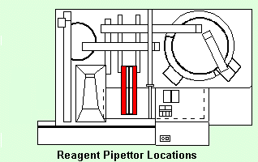
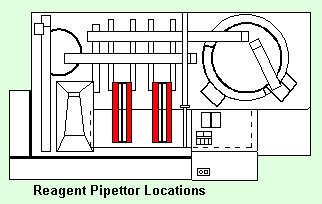
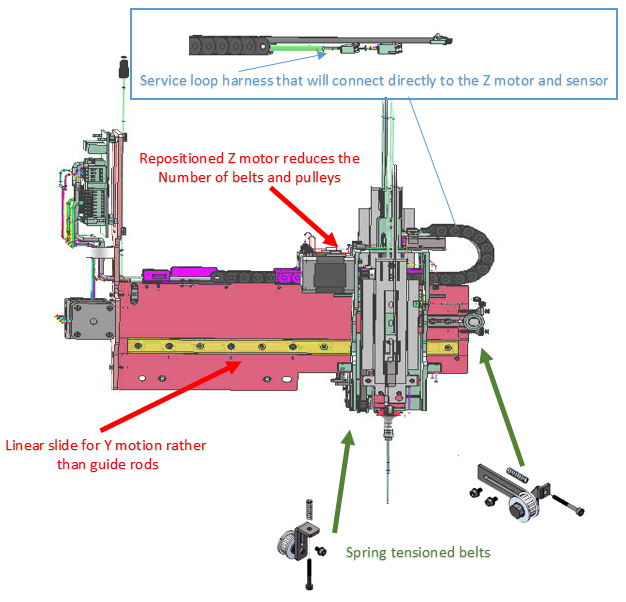
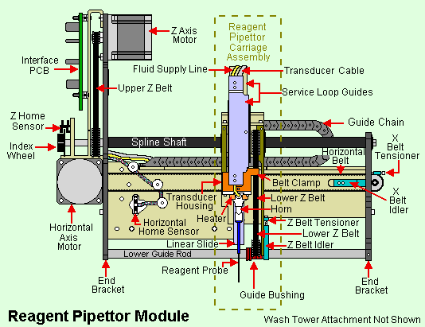
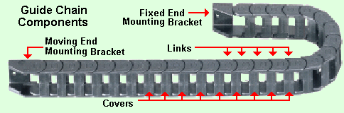

Reagent Pipettor Operating Principles
Purpose
This document details the operating principles for the reagent pipettor.
Module Function
- Transfer sample from sample vessels (SVs) and dilution vessels (DVs) to reaction vessels (RVs).
- Provide on-board sample dilutions.
- Deliver reagents to reaction vessels (RVs).
- Provide particle mixing both in reagent packs and RVs.
- Position the reagent probe in the wash tower for probe wash.
- Level sense fluid in sample vessels (level sensing is not performed in DVs and RVs).
Location
The DxI 800 has four reagent pipettors grouped into two identical modules with two pipettors in each module.
The DxI 600 has two reagent pipettors grouped into one module.


Operational Overview
This operational overview outlines the steps for a one-step assay.
| Process | Steps |
|---|---|
| Probe wash |
|
| Particle mix and reagent aspiration process |
|
| Reagent dispense |
|
| Sample transfer (SV to RV) |
|
| DV | Refer to the Tag for specific dilution assay in the Access Systems Applications Database. |
Component Locations
Y Axis Linear Slide Reagent Pipettor
The Y Axis linear Slide reagent pipettor performs the same as the previous version, but features a few re-engineered components.

Non-Linear Slide Reagent Pippettor


Component Functions
| Component | Description and Function |
|---|---|
| Y Axis Linear Slide
|
The Y Axis linear slide replaces the guide rods that supported the pipettor Y movement. |
| Spring Tensioning Idler for X and Z belt tensioning
|
The spring tensioned X and Z idler will provide uniform tension for the drive belts. To tension the belt (see picture): 1) Loosen the idler bracket securing screws. 2) Back the tensioning screw off until the screw head separates from the idler bracket. 3) Tighten the securing screw. To remove the belt, perform the same steps, but drive the tensioning screw toward the bracket ( compressing the spring). |
| Cable addition for the Z motion components
|
The Z Axis Service Loop Cable was added for a quick disconnect from the Z components. This can eliminate the need to remove the cabling from the chain during a component change. |


| Component | Description and Function |
|---|---|
| Belt (Upper Z, Lower Z, and X) | Three belts (all are different lengths) that transfer motor motion to move reagent pipettor carriage. |
| Cable, Transducer | Provides a path for transducer drive and heater power from interface PCB to ultrasonic transducer. |
| Carriage Assembly | Section of reagent pipettor module which moves vertically and horizontally to aspirate and dispense reagents and sample fluid. |
| Chain, Guide | Sectioned, flexible housing for the transducer cable and fluid supply line that route to the carriage. Chain provides controlled flexing and protection for contents. Components of this assembly are:
Note: Chain guide is also referred to as the service loop guide in some documents.
|
| Clamp, Belt | Attaches the lower Z-belt to the carriage. |
| Gantry | Term applies to the entire reagent pipettor module, but specifically a gantry is a device that can move both horizontally and vertically to perform a function. |
| Guide, Service Loop | Grooved metal parts that control the Z-movement position of the fluid supply line and transducer cable as the reagent pipettor carriage moves vertically. |
| Heater, Transducer | Maintains a constant temperature on the ultrasonic transducer. This heater wraps around the metal above the horn. |
| Idler Assembly (Z- and X-Axis) | Pulleys around which the motion belts are routed. They are adjustable and are used to tension the belt. |
| Line, Fluid Supply | Tubing from the fluidics module connects to each of the probes or ultrasonic transducers. |
| Loop, Service | Refers to the vertical routing of the transducer and heater circuit cables and fluid tubing. These loops allow the reagent pipettor carriage to move freely while limiting wear or damage to these continually flexing items. |
| Motor, X-Axis | Provides power to move the reagent pipettor carriage horizontally. |
| Motor, Z-Axis | Provides power to move the reagent pipettor carriage vertically. |
| PCB, Interface | Contains the input and output connections from this module to the instrument. |
| PCB, Ultrasonics | Ultrasonics PCB is part of the electronics module. The ultrasonics PCBs are mounted in the left-most section of the upper right electronics module. |
| Probe, Reagent |
Probe is mechanically attached to a transducer. When power is applied to the transducer, the probe moves up and down 23 micro inches at a frequency of 35.5 kHz to 36.1 kHz. |
| Sensors | Two types of position sensors are used on each reagent pipettor:
|
| Shaft, Guide | Round metal shaft that allows horizontal movement of the reagent pipettor carriage. |
| Shaft, Spline | Round metal shaft with a groove in it that allows horizontal movement of the reagent pipettor carriage. Shaft also rotates to move the reagent pipettor carriage vertically. |
| Slide, Linear | Type of bearing that allows a low friction linear movement path for a mechanical device. In the reagent pipettor module, the reagent pipettor carriage is attached to this bearing and provides a vertical path for moving the reagent pipettor carriage. |
| Tensioner, Belt | A block and pulley assembly which can be mechanically adjusted to loosen or tighten either the X or Z belt. |
| Transducer, Ultrasonic | Converts electrical energy into mechanical movement. This mechanical movement is provided at ultrasonic frequencies to the tip of the probe for level sensing, mixing, and probe washing.
Note: For a thorough explanation of the transducer, refer to the
RP: Ultrasonics Operating Principlesdocument.
|
| Wash Tower Attachment (not shown) | Two wash towers are mounted to brackets that are part of the lower area of the reagent pipettor mounting tower. |
| Wheel, Index
|
A notched, flat metal disc that rotates through the Z-home sensor transmitter and receiver. When the notch passes through the sensor, it allows the receiver to sense light from the transmitter, indicating to the software that the reagent pipettor carriage is at its vertical home position. This causes a change in the Z-home sensor output. |
Interacting Devices
- Reagent storage module
- Reagent carriages
- Fluidics module
- Electronics module (dual ultrasonics PCBs)
- Reagent pipettor wash towers
Ultrasonics
For a detailed explanation of the ultrasonics process, refer to the RP: Ultrasonics Operating Principles document.